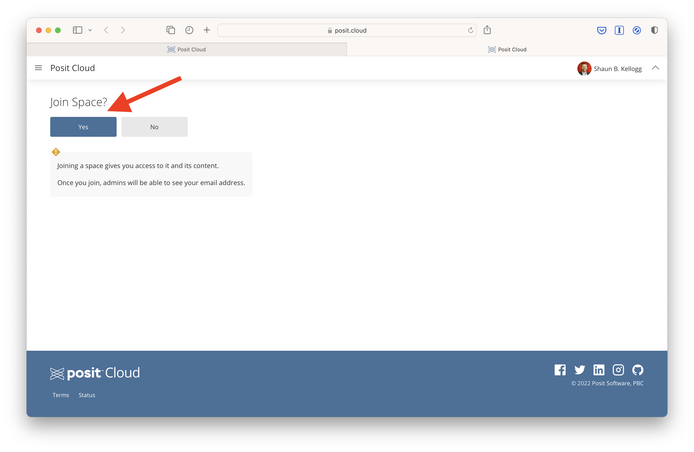

Text Mining Toolkit
ECI 586 Intro to Learning Analytics
Your final task is to prepare your Learning Analytics Toolkit by setting up and getting familiar with the required texts and software we’ll be using throughout the course.
Part 1: Text & Software
The first step in preparing your toolkit is making sure you can access the required course texts and data analysis software. These required texts and software, as well as optional but recommended software and texts, are describe in more detail in our ECI 588 Course Syllabus.
Course Texts
There are several required textbooks for this course, all of which are freely available online or through the NCSU Library. Supplemental course readings and content (e.g. articles, videos) will also be provided at no cost through the Moodle course site. You will also be asked to locate articles of interest for our discussions and I highly recommend that you link Google Scholar to the NCSU Library: https://www.lib.ncsu.edu/articles/google-scholar.
Course readings will draw heavily from the following resources:
- Silge, J., & Robinson, D. (2017). Text mining with R: A tidy approach. O’Reilly Media, Inc. https://www.tidytextmining.com
- Researcher and Practitioner Articles (see References). Provided through the Moodle course site.
Data Analysis Software
Hands-on data analysis tutorials and experiences will make extensive use of R and R Studio during the semester. You will access Learning Analytics Case Study activities through Posit Cloud and will complete R tutorials to assist with these activities through DataCamp.
Posit Cloud (https://posit.co/products/cloud/cloud/) provides access to Posit’s powerful set of data science tools, including RStudio (https://posit.co/products/open-source/rstudio), an integrated development environment (IDE) for R and Python that includes a console and syntax-highlighting editor, as well as tools for plotting, history, debugging, and workspace management. As part of our Case Studies, we’ll also be making extensive use of Quarto (https://quarto.org), an open-source scientific and technical publishing system used for creating reproducible, production quality articles, presentations, dashboards, websites, blogs, and books in HTML, PDF, MS Word, ePub, and more.
First, register for a free Posit Cloud account at: https://login.posit.cloud/register.
Next, access our ECI 588: Text Mining in Education workspace at: https://posit.cloud/spaces/597706/join?access_code=weMxPiHe3BsKRsQOtUOnlD9NwbNG3L1G7NsuBanV
DataCamp (https://www.datacamp.com) is an online learning platform with a large catalog of video tutorials, coding activities, assessments and certifications for R, Python, data science, statistics & more.
Register for a free account using your @ncsu.edu email address at: https://www.datacamp.com/users/sign_up
After registering with your NC State email, click the following link to access our Learning Analytics DataCamp group space where you will complete required assignments during Week 2 of each unit.
Part 2: Introduction to R DataCamp Assignment
The second step in preparing your Learning Analytics Toolkit is to join our Learning Analytics group on DataCamp and complete your first assignment: Introduction to R.
Sign Up
First, sign up for a DataCamp account using your NC State email.
Join Group
Next, click the following link to access our Learning Analytics DataCamp group space. You will be informed that you have been invited to join the space and should see something like below. Click “Join” to accept the invite to our group and then the “Getting Started” button on the page that follows.
Next you’ll be prompted to “Start with the course that Shaun Kellogg has assigned to you” or “Go to the Dashboard ->” instead. You’re welcome to get started immediately on the Introduction to R course, but I recommend taking a quick visit to the group dashboard first.
Visit Dashboard
The DataCamp Dashboard is where you can access DataCamp courses, tutorials, assessments, certifications, etc. As part of the educator group I set up for this course and for my LASER Institute, you have free access to the full suite of DataCamp instructional resources for the fall semester!
Feel free to explore the dashboard board and click around to check out the resources available to you. To get back to this page, click the “Learn” button in the menu bar at the top of the page.
Start Assignment
You should see the Introduction to R course assignment on your dashboard. Click on that to get started on the assignment. Once, you do you should the see the course landing page picture below.
Click “Start’ to get started on the assignment. Once you do, you’ll see an exercise with a set of instructions on the left, and on the right you’ll see a code editor and R Console for writing and runing code and viewing the outputs of the R code you run.
Good luck and don’t hesitate to reach out if you have any questions or run into any issues!
Part 3: Getting Started with Posit Cloud
Your final step in preparing your toolkit is to complete our introductory Case Study designed to help get you up and running with RStudio and working with Quarto. This brief activity is designed to orient you to the data analysis assignments during the final week of each unit, including the use of R, RStudio, and Quarto.
Sign Up
If you haven’t done so already, be sure to sign up for a free Posit account. You can access the free plan directly using this link: https://posit.cloud/plans/free.
Join Space
Next, access our ECI 588 Text Mining in Education (2025) workspace. This space is part of my paid plan and will provide you unlimited use of Posit Cloud during the semester. You should see a prompt to “Join Space?” like the one below:

View Content
After joining the space, you may see a description of the space like in the screenshot below. Click the “Content” menu tab next.

Start Assignment
Once you have accessed the content section of our workspace, click on the assignment labeled Unit 0 - Getting Started, which will create a copy of the R Project for your individual use.

Open Case Study
Next, click on the unit-0-case-study.qmd file located in the Files tab of your R Studio cloud project. This will open the Unit 0: Getting Started Case Study assignment. This assignment is created using a Quarto document, which allows
Finally, if the document opens in “Source” mode and looks like unformatted text, click on the “Visual” button in the toolbar of the file you just opened and follow the direction to complete the assignment.
Your Turn
Complete the assignment by reading through the document and completing coding activities and reflection questions where you see the Your Turn ⤵ signal. Be sure to complete all your the activities or your document will not “render” to an HTML webpage when you have completed the assignment.
Good luck and don’t hesitate to reach out if you have any questions or run into any issues!
Troubleshooting
Learning a programming language like R (or any new language for that matter) will inevitably be a little frustrating at first. Even experienced R developers like Hadley Wickham get frustrated:
“It’s easy when you start out programming to get really frustrated and think, ‘Oh it’s me, I’m really stupid,’ or, ‘I’m not made out to program.’ But, that is absolutely not the case. Everyone gets frustrated. I still get frustrated occasionally when writing R code. It’s just a natural part of programming. So, it happens to everyone and gets less and less over time. Don’t blame yourself. Just take a break, do something fun, and then come back and try again later.”
When feeling stuck or like banging your head against your desk, there are several options for seeking out help within and beyond this course:
Course Forums & Email: Including this general software troubleshooting forum, we will have forums for each assignment. You’ll likely have similar questions as your peers, and you’ll likely be able to answer other peoples’ questions too so I encourage you to use these forums. Unlike most of my apps and social media accounts, I actually have notifications enabled. Also, do not hesitate to email me directly as well.
Learning Analytics Office Hours: Some issues are much easier to troubleshoot in real time. To schedule a 1 on 1 meeting with me in person of via Zoom, use the following Calendly link: https://calendly.com/sbkellogg/analytics
ChatGPT (https://openai.com/chatgpt/) is an advanced AI language model developed by OpenAI and is highly recommended for this course. It’s and excellent tool for learning analytics and can assist by explaining concepts, helping with code, offering analysis guidance, and troubleshooting, though it’s important to verify its advice against reliable sources.
Use with or without registering for an account at: https://chatgpt.comNCSU Library Services: The Data & Visualization group is an incredible asset for NC State students. Though the library’s website, you can access and enroll in workshops, find resources, and chat or schedule a Zoom appointment to get R help.
Social Media: If you use Twitter, you can also post R-related questions and content with the #rstats hashtag. One of the things I most value about the R in general is that the R community is exceptionally helpful.
The Interwebs: Aside from Google of course, StackOverflow and the RStudio Community will likely become tried and true tools in your text mining toolkit. In fact, I’d wager that the majority of Google searcher will likely direct you to one of these two sites. Note that when search Google, it sometimes helps to include “rstats” in your query.